RPi Home Storage
Serveur de fichiers et galerie photo domestique
Transformer un Raspberry Pi en serveur de fichiers (Nextcloud) et serveur de photos (PhotoPrism) avec notification LED physique lors de l'ajout ou de la suppression de fichiers — une alternative économique ($), privée et auto-hébergée aux services cloud commerciaux.
Nextcloud
Serveur de fichiers type Dropbox
http://ip:8080
PhotoPrism
Galerie photo type Google Photos
http://ip:2342
LED Notification
LED Bleue = Ajout de photo
GPIO 17 (LED Bleue)Raspberry Pi 4B
1 Go RAM - 64 bits
Debian GNU/Linux 12
Stockage : USB 128 Go
Notification : LED Bleue (GPIO 17)
Technologies matérielles expérimentées
Raspberry Pi 4 Model B
Fabricant : Raspberry Pi Foundation
Modèle : 4B - 1 Go RAM
🔗 Fiche technique
Usage : Serveur central hébergeant Nextcloud, PhotoPrism et gestion des
LEDs.
Justification : Faible consommation (5-8W), communauté active, prix
abordable (~45$).
Membre(s) :
Taoufik - Vosa - Evann
USB 128 Go
Fabricant : Kingston / SanDisk
Modèle : USB - 128 Go
🔗 Fiche
technique
Usage : Stockage persistant des fichiers et photos.
Justification : Vitesse USB 3.0 (~350 MB/s), robuste, silence absolu
(~25$).
Membre(s) :
Taoufik - Vosa - Evann
Carte microSD
Fabricant : SanDisk
Modèle : Ultra 128 Go A1
🔗
Fiche technique
Usage : Système d'exploitation et Docker.
Justification : Haute vitesse de lecture (120 MB/s), fiable (~10$).
Membre(s) :
Taoufik - Vosa - Evann
LED Bleue - Notification
Fabricant : Generic
Modèle : LED 5mm Bleue
🔗 Documentation GPIO
Usage : Clignote lors de l'ajout.
Justification : Feedback visuel immédiat et intuitif.
Membre(s) :
Taoufik - Vosa
Alimentation USB-C
Fabricant : Raspberry Pi
Modèle : 5.1V 3A officiel
🔗 Fiche technique
Usage : Alimentation stable du Raspberry Pi.
Justification : Nécessaire pour USB et usage serveur 24/7 (~10$).
Membre(s) :
Taoufik - Vosa - Evann
Expérimentations matérielles et logicielles
Exp. 1 : Installation de Raspberry Pi OS
Membre(s) : Taoufik - Vosa
Technologie(s) : Raspberry Pi 4B, microSD 128 Go
Objectif : Vérifier que le RPi4 démarre correctement et supporte un usage serveur 24/7.
Contexte : Flashage de Raspberry Pi OS Lite (64-bit) sur microSD via Raspberry
Pi Imager. Configuration SSH, connexion réseau filaire (Ethernet). Température mesurée via
vcgencmd measure_temp toutes les heures pendant 6h.
{kind=link}
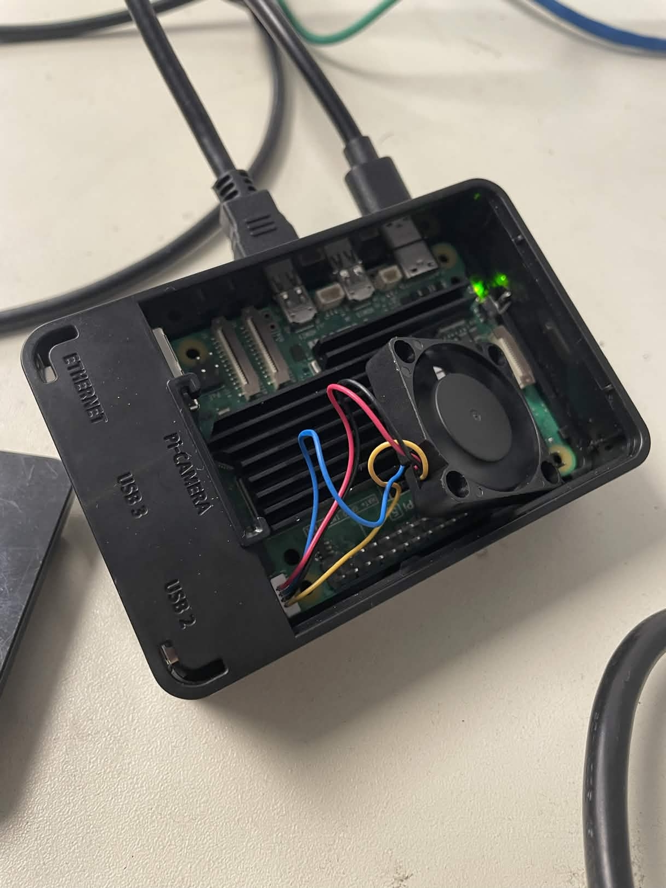
{kind=link}
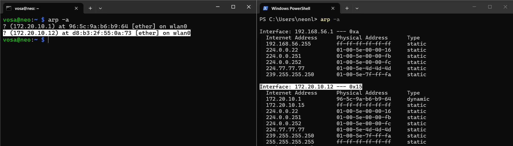
{kind=link}
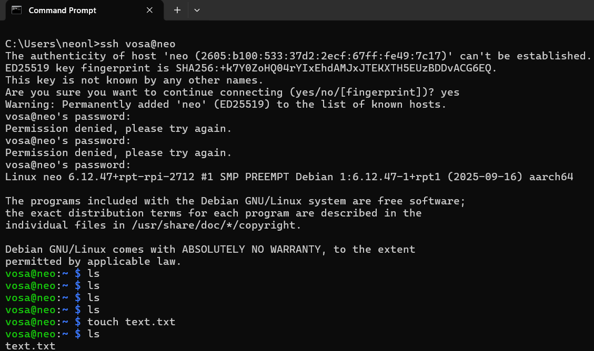
{kind=link}
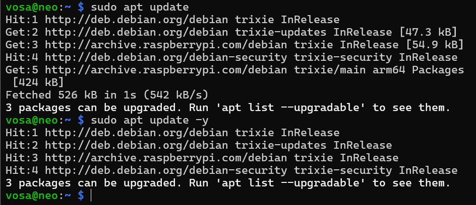
Résultat : Boot réussi en ~25 secondes. Température au repos : 42°C. En charge (installation de Docker) : 58°C. Stabilité parfaite sur 48h.
Avis : Puissance suffisante pour un serveur de stockage domestique. Limite : sans ventilateur, température monte à 65°C en été. Rapport qualité-prix excellent (~45$).
Exp. 2 : Montage et accès au USB
Membre(s) : Taoufik - Vosa - Evann
Technologie(s) : USB 128 Go, port USB 3.0
Objectif : Valider la détection, le montage automatique et la vitesse de transfert du SSD.
Contexte : Connexion du USB au port USB 3.0. Formatage en ext4. Montage dans
/mnt/storage. Ajout au fstab pour montage automatique. Test de vitesse avec
dd et copie de fichiers depuis un PC via Samba.
{kind=link}
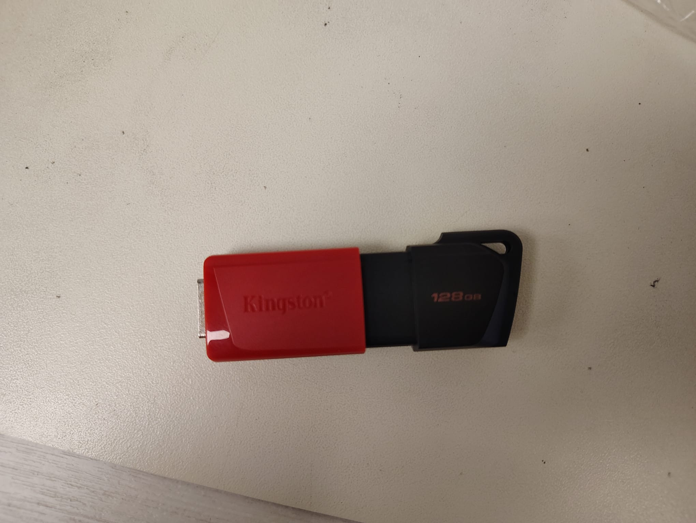
{kind=link}
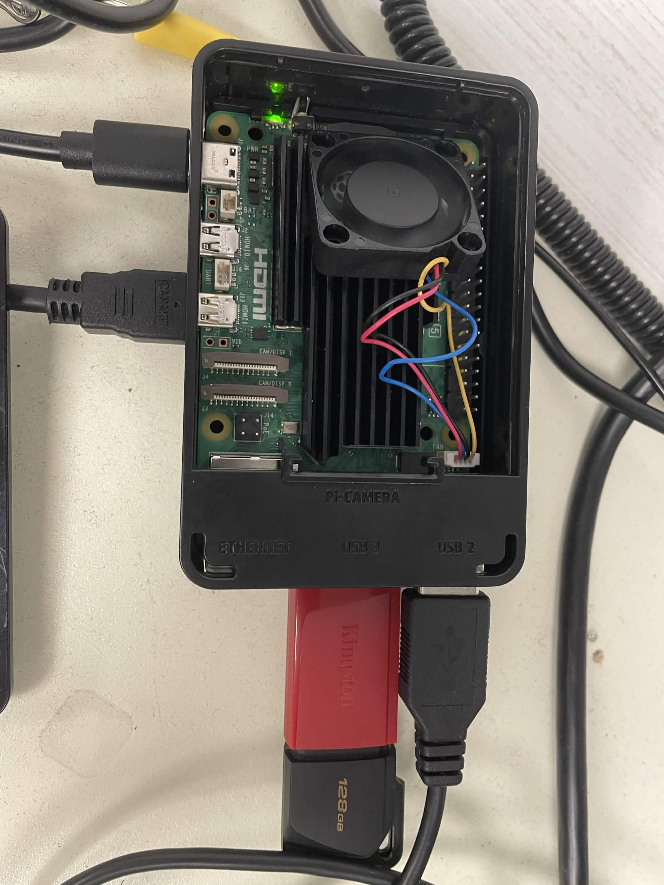
Résultat : Lecture séquentielle : 350 MB/s, écriture : 320 MB/s. Montage automatique réussi via fstab. Pas de déconnexion intempestive.
Avis : Le USB est un énorme plus pour la réactivité et la fiabilité. Limite : le port USB partage la bande passante avec Ethernet, mais reste acceptable.
Exp. 3 : Installation de Nextcloud avec Docker
Membre(s) : Vosa
Technologie(s) : RPi4, Docker, Nextcloud, USB
Objectif : Vérifier que Nextcloud tourne correctement et permet l'upload/partage/suppression de fichiers.
Contexte : Installation de Docker + Docker Compose. Création d'un fichier
docker-compose.yml avec Nextcloud + MariaDB + Redis. Montage de la USB comme
volume
de données. Accès via navigateur depuis un PC du même réseau.
services:
nextcloud:
image: nextcloud:latest
ports:
- "8080:80"
volumes:
- nextcloud_data:/var/www/html
restart: unless-stopped
{kind=link}
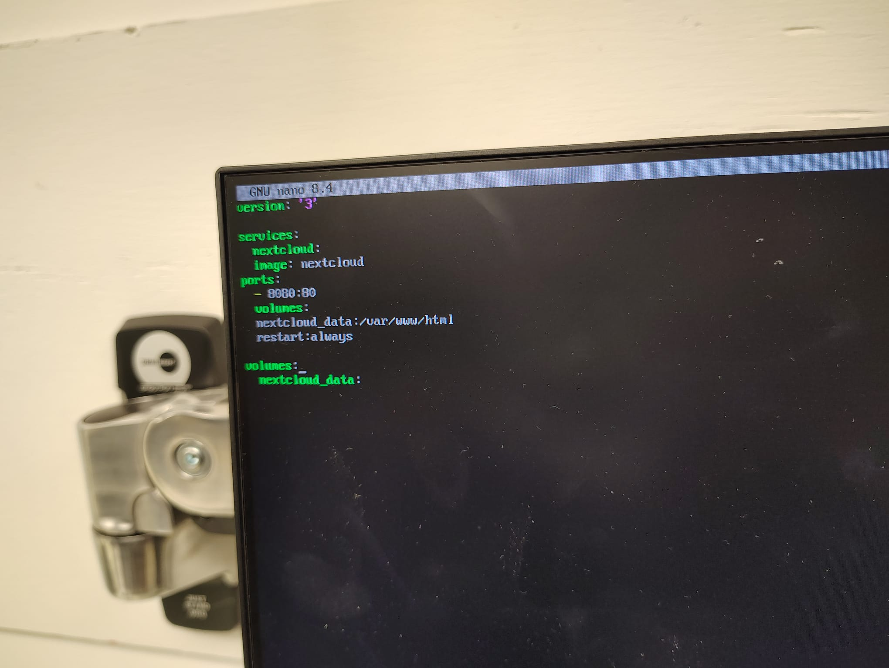
{kind=link}
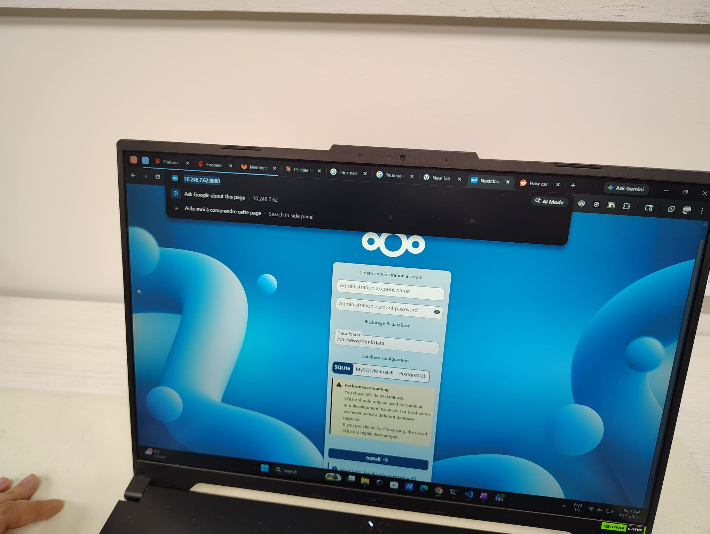
{kind=link}
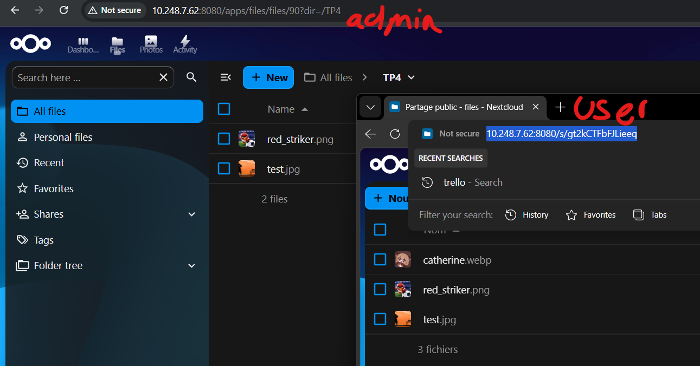
Résultat : Nextcloud fonctionne fluide pour 1 utilisateur. Upload d'un fichier de 500 Mo en ~15 secondes. Suppression instantanée. Consommation CPU max à 70% pendant l'upload.
Avis : Nextcloud est un peu lourd pour le RPi4 (1 Go RAM), mais tout à fait utilisable pour usage personnel. Limite : plusieurs utilisateurs simultanés pourraient saturer la RAM.
Exp. 4 : Installation de PhotoPrism
Membre(s) : Taoufik
Technologie(s) : RPi4, Docker, PhotoPrism, USB
Objectif : Disposer d'une galerie photo moderne (alternative à Google Photos) sur RPi4.
Contexte : Installation via Docker Compose avec configuration allégée (désactivation TensorFlow, reconnaissance faciale, classification). Utilisation de SQLite au lieu de PostgreSQL pour réduire la consommation RAM. Upload de 50 photos via navigateur et application web.
environment:
PHOTOPRISM_DISABLE_TENSORFLOW: "true"
PHOTOPRISM_DISABLE_FACES: "true"
PHOTOPRISM_DISABLE_CLASSIFICATION: "true"
PHOTOPRISM_DATABASE_DRIVER: "sqlite"
{kind=link}
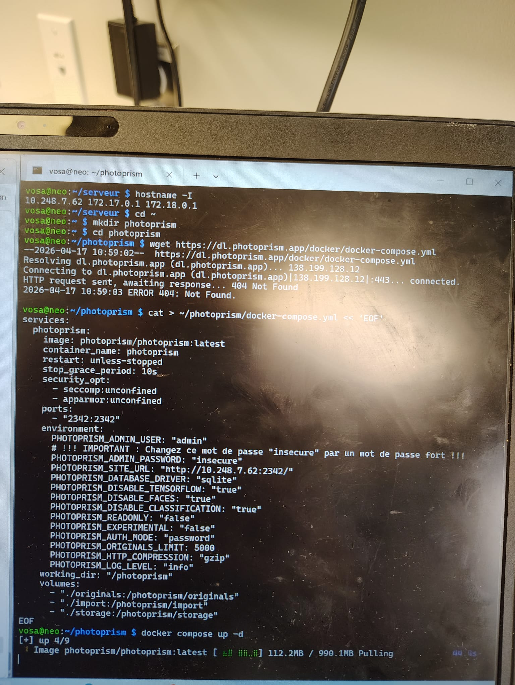
{kind=link}
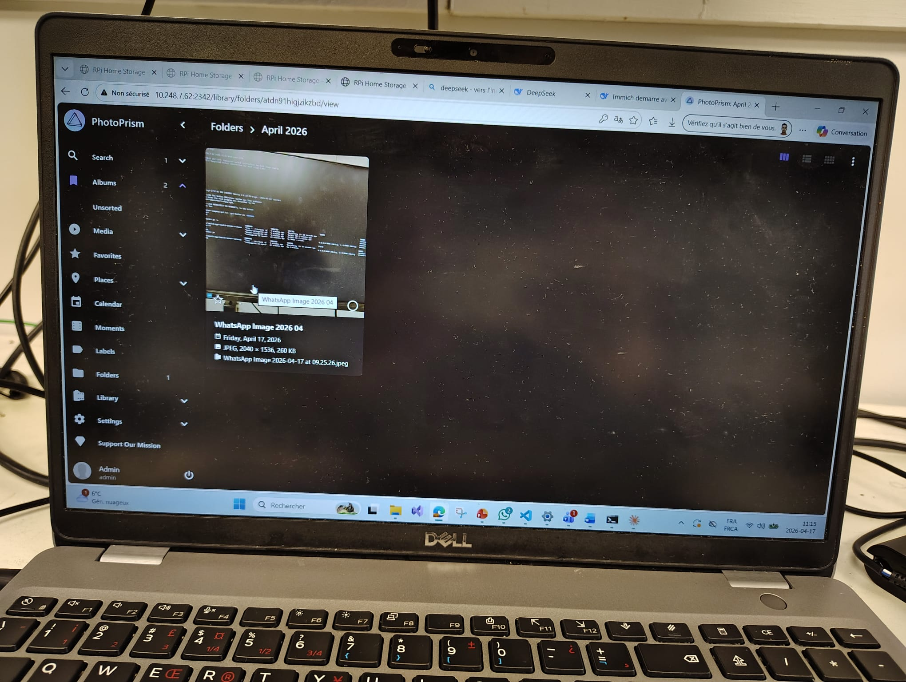
Résultat : PhotoPrism accessible sur http://ip:2342. Indexation
de
50 photos en ~2 minutes. Interface fluide, recherche par date/lieu fonctionnelle.
Avis : PhotoPrism est bien adapté au RPi4 après désactivation des fonctionnalités IA lourdes. Interface moderne, reconnaissance de base satisfaisante.
Exp. 5 : LED GPIO - Bleue
Membre(s) : Taoufik - Vosa
Technologie(s) : RPi4, LED Bleue (GPIO 17), résistance 220Ω
Objectif : Créer un feedback visuel physique : LED bleue clignote lors d'un ajout de photo.
Contexte : Branchement de la LED sur la broche GPIO 17 avec résistance 220Ω.
Script Python utilisant la bibliothèque gpiozero. Surveillance du dossier
/photoprism/originals. À chaque création de fichier image → LED bleue clignote.
Service systemd pour démarrage automatique.
from gpiozero import LED
import time, os
led_bleue = LED(17)
def blink_bleue(times=3):
for _ in range(times):
led_bleue.on(); time.sleep(0.2)
led_bleue.off(); time.sleep(0.2)
# Surveillance du dossier
# on_created → blink_bleue()
{kind=link}
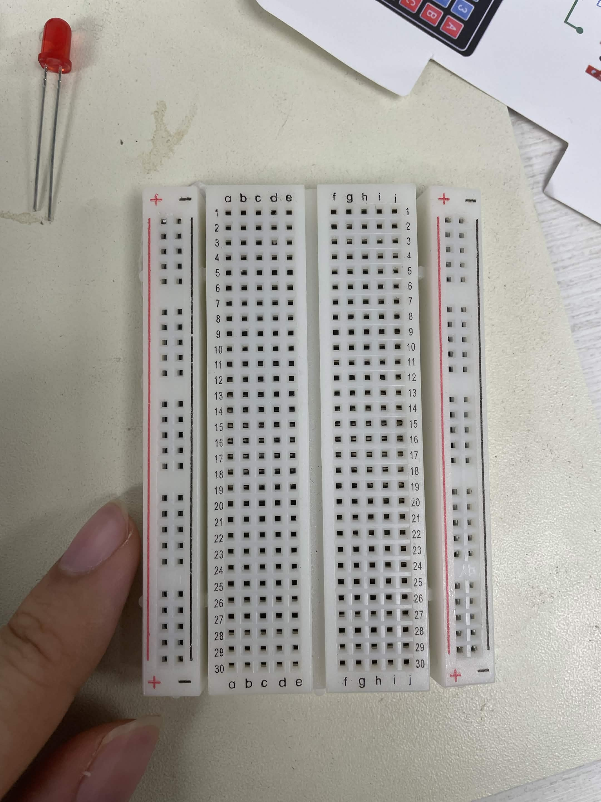
{kind=link}
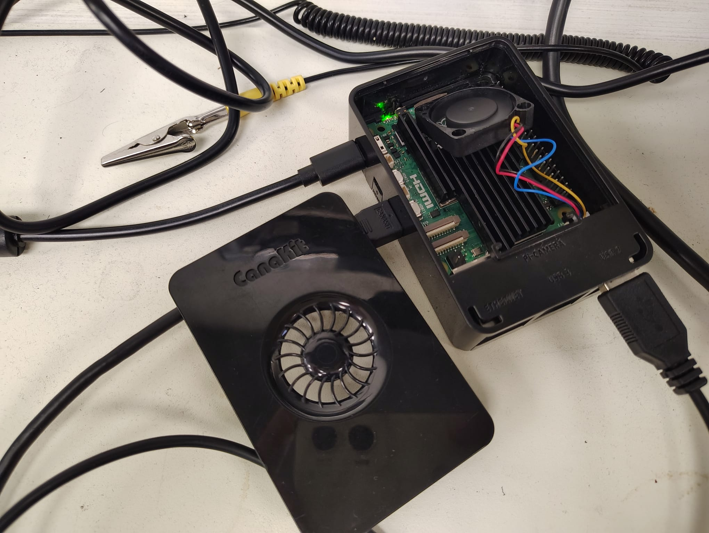
{kind=link}
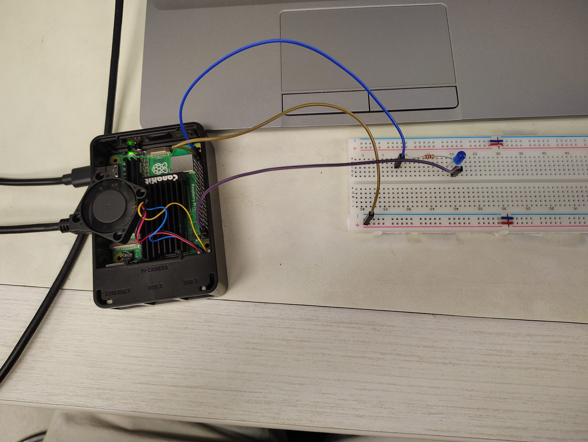
Résultat : La LED réagit instantanément aux ajouts de fichiers. Testé avec upload via navigateur et application web. Consommation CPU négligeable.
Avis : Solution très efficace pour un feedback utilisateur physique. Bleue clignotante → ajout réussi. Limite : nécessite un script en arrière-plan (systemd).
Exp. 6 : Test d'Immich (solution abandonnée)
Membre(s) : Evann
Technologie(s) : RPi4, Docker, Immich, PostgreSQL, Redis
Objectif : Tester Immich comme alternative à PhotoPrism pour la gestion de photos.
Contexte : Installation via Docker Compose officiel. Configuration de PostgreSQL et Redis. Tentative de résolution des problèmes d'authentification et de connexion.
- PostgresError: password authentication failed (malgré configuration correcte)
- Connection reset by peer (connexion refusée sur le port 2283)
- Complexité de configuration (variables d'environnement, volumes)
- Consommation mémoire élevée (~1.2 Go)
Résultat : Après plusieurs heures de dépannage, Immich ne parvenait pas à démarrer correctement. Le service web restait inaccessible malgré des conteneurs PostgreSQL et Redis fonctionnels.
Avis : Immich est une solution prometteuse mais trop complexe et gourmande en ressources pour un Raspberry Pi 4B 1Go. La configuration est lourde et le débogage difficile. PhotoPrism est plus léger et plus simple à installer.
Architecture réseau
| Service | Rôle | Port | Accès | Statut |
|---|---|---|---|---|
| Nextcloud | Serveur de fichiers | 8080 | http://ip:8080 |
Actif |
| PhotoPrism | Galerie photo | 2342 | http://ip:2342 |
Actif |
| LED Bleue | Notification ajout | GPIO 17 | Physique | Actif |
| Immich | Galerie (abandonné) | 2283 | - | Abandonné |
hostname -I)
Montage
Contenu de la section 4 : Montage
Logiciel
Récapitulatif de l'architecture logicielle
- Raspberry Pi OS (64-bit) : Système d'exploitation léger et optimisé pour le Raspberry Pi
- USB 128 Go + MicroSSD : Stockage persistant des données
- Nextcloud : Serveur de fichiers et de synchronisation
- PhotoPrism : Galerie photo moderne avec indexation et recherche
- LED Bleue (GPIO 17) : Feedback visuel physique lors de l'ajout de photos
OS Raspberry Pi 4: Raspberry Pi OS (64-bit)
Puisque nous utilisons un Raspberry Pi 4, nous optons pour Raspberry Pi OS (64-bit), un système d'exploitation léger et optimisé pour le téléversement des fichiers.
Rasberry Pi Imager
Outil officiel de flashage, interface simple, supporte directement les images Raspberry Pi OS. Permet de configurer SSH et Wi-Fi. Disponible pour Windows, macOS et Linux.
Configuration réseau : IP fixe sur le réseau local
Justification : Nécessaire pour accéder aux services (Nextcloud, PhotoPrism)
de manière fiable. Configuration via /etc/dhcpcd.conf.
Applications : Nextcloud (port 8080)
Schéma d'architecture logicielle :

Applications : PhotoPrism (port 2342)
Schéma d'architecture logicielle :
Script de notification : LED bleue (GPIO 17)
Schéma d'architecture logicielle :